Konfigurasi Dasar HCI Dari login pertama sampai cluster multi-node yang siap produksi.
Modul belajar interaktif dari 47 slide training: masuk ke Management Platform melalui IPMI dan web console, mengonfigurasi empat interface jaringan, memahami VXLAN dan jumbo frame, menyusun link aggregation, mengaktifkan lisensi, lalu merancang deployment 2–3 node.
Hasil yang diharapkan: setelah modul ini, kamu dapat login ke platform, membagi empat interface sesuai fungsinya, menyamakan agregasi dengan konfigurasi switch, dan memastikan lisensi aktif.
Console web
10.250.0.7 https
admin · ETH0 · terms accepted
Overlay interface
eth5 VXLAN
10.11.78.2 · MTU 1600
Catatan: semua alamat (192.168.10.10, 10.250.0.7, 10.11.78.x) adalah nilai default dari lab — ganti dengan denah jaringan kamu. Materi berlaku untuk firmware 6.9.1 ke atas.
Kompetensi yang dicapai setelah modul ini.
Modul ini menargetkan lima kemampuan praktis yang dipakai saat menerima node baru dari vendor. Semuanya dapat dilatih ulang tanpa pendamping.
Login ke platform melalui dua jalur: IPMI untuk manajemen perangkat keras (termasuk daftar akun default) dan web console untuk pekerjaan harian.
Membedakan empat interface jaringan berdasarkan fungsinya, yaitu management, overlay, storage, dan physical edge, serta menentukan kapan fungsi-fungsi itu digabung.
Menjelaskan VXLAN: mengapa trafik antar node tidak melewati jaringan fisik, mengapa MTU naik ke 1600, dan setelan apa yang diperlukan di switch fisik.
Mengonfigurasi link aggregation: menambah bonding, memilih mode load balancing yang sesuai dengan switch, dan mengaktifkan jumbo frame di kedua sisi.
Mengaktifkan lisensi: menghitung trial 60 hari dan sisa 30 hari, memahami batas 3 cluster per USB Key, serta ketentuan virtual key.
Target praktis: platform terbuka di browser, interface dan agregasi tersambung ke switch, lisensi aktif, dan topologi deployment 2–3 node siap dibangun.
Lima topik, satu alur konfigurasi.
Urutan topik mengikuti alur kerja sebenarnya: akses platform, konfigurasi jaringan, agregasi, lisensi, lalu deployment.
Login & Akses Platform
IPMI, web console, menu bar, dan penanganan IP management yang hilang.
Dua jalur aksesInterface Jaringan
Management, overlay/VXLAN, storage, dan physical edge.
4 fungsi + MTULink Aggregation
Bonding, mode LB, flow control, dan konfigurasi switch.
Static LACPAktivasi Lisensi
Edisi, trial, USB key, dan virtual key.
60 / 30 / 3Deployment Multi-node
Topologi fisik 2 dan 3 node sebelum cluster.
Topologi 2–3 nodeCara pakai: setiap topik membahas satu konfigurasi, nilai yang harus diisi, dan akibat jika salah. Bagian bertanda JEBAKAN UMUM berisi kesalahan yang paling sering terjadi. Jika sudah terbiasa dengan console HCI, lanjut ke Topik 2 dan kerjakan checklist di akhir modul.
Urutan konfigurasi setelah node menyala.
Konfigurasi dasar terdiri dari lima tahap berurutan. Setiap tahap memiliki hasil yang dapat diverifikasi sebelum lanjut ke tahap berikutnya.
Akses platform
IPMI di https://192.168.10.10, web console di https://10.250.0.7 lewat ETH0.
Management Platform aktif
Login admin berhasil; menu Home sampai System tersedia; health check terlihat.
Empat interface terkonfigurasi
Management, overlay/VXLAN, storage, dan physical edge memiliki fungsi masing-masing.
Agregasi berjalan
Bonding dan mode LB sama dengan switch fisik; jumbo frame aktif di kedua sisi.
Lisensi valid & cluster siap
USB key atau virtual key aktif; topologi 2–3 node siap membentuk cluster.
Perhatian: kesalahan paling sering terjadi antara tahap 03 dan 04. Agregasi di HCI sudah benar, tetapi mode switch berbeda atau jumbo frame belum aktif. Trafik tetap berjalan, namun performa tidak sesuai dan penyebabnya sulit ditemukan.
Akses dan konfigurasi awal
Dua jalur akses, daftar akun default, struktur menu, dan cara menemukan IP management yang hilang. Semua yang dibutuhkan sebelum konfigurasi jaringan.
Dua jalur akses dengan fungsi berbeda.
IPMI dipakai untuk manajemen perangkat keras saat sistem operasi tidak dapat diakses. Web console dipakai untuk pekerjaan harian. Catat kedua alamat dan akunnya sebelum node dipasang di rak.
Akun IPMI tidak diketahui
Ada tujuh kombinasi akun default IPMI dan hanya satu yang berlaku pada perangkat tertentu. Mencoba satu per satu memakan waktu dan meninggalkan catatan login gagal di log.
- Gejala: login terkunci berulang kali karena percobaan yang salah.
Web console diakses dari jaringan yang salah
Alamat default https://10.250.0.7 hanya dapat dijangkau melalui interface ETH0. Jika komputer admin berada di subnet lain, halaman console tidak terbuka meskipun node berjalan normal.
- Gejala: browser tidak dapat membuka halaman login.
Alamat IP management berubah
Setelah instalasi ulang atau perubahan jaringan, IP management dapat berubah. Tanpa akses fisik (monitor VGA), alamat baru tidak dapat diketahui.
- Gejala: alamat lama tidak dapat dibuka dan alamat baru tidak tercatat.
Aturan praktis: catat alamat IPMI, alamat web console, akun yang berlaku, dan syarat browser sebelum node dipasang. Kedua halaman memerlukan browser yang mendukung HTML5, misalnya Chrome, Firefox, atau IE11.
Cara mengakses IPMI aServer.
IPMI berjalan pada interface IPMI/MGMT dengan alamat default yang tetap. Yang berbeda antar perangkat adalah akunnya. Daftar berikut diurutkan berdasarkan prioritas percobaan.
| Prioritas | Username | Password default | Catatan |
|---|---|---|---|
| 1 | Sangfor | S#AN$6fo81r | Coba lebih dulu |
| 2 | ADMIN | 11111111 | Delapan digit angka 1 |
| 3 | Sangfor | ADMIN | Kombinasi kedua dari vendor |
| 4 | admin | admin | Sama dengan akun web console |
| 5 | admin | 11111111 | Username huruf kecil, password angka |
| 6 | ADMIN | ADMIN | Keduanya huruf besar |
| 7 | admin | admin1 | Coba terakhir |
Jebakan umum: akun admin/admin hanya berlaku untuk web console; IPMI memiliki daftar akun sendiri. Menggunakan admin/admin di IPMI tidak akan berhasil dan percobaan gagal akan tercatat di log audit.
Kenapa penting: IPMI berjalan independen dari sistem operasi. Ketika web console tidak dapat dibuka karena IP berubah atau konfigurasi jaringan salah, IPMI tetap dapat diakses tanpa masuk ke ruang server.
Login pertama ke web console.
Web console HCI berjalan di ETH0 dengan akun default admin/admin. Web console berbeda dari IPMI; seluruh konfigurasi, health check, dan lisensi dilakukan dari halaman ini.
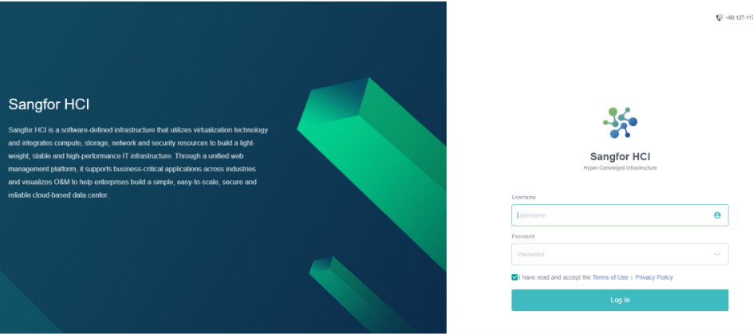
- Buka alamat console
Arahkan browser ke
https://10.250.0.7dari jaringan yang dapat mencapai ETH0. - Isi akun default
Username admin, password admin.
- Setujui Terms of Use
Centang “I have read and accept the Terms of Use | Privacy Policy”. Tanpa centang ini, tombol Log In tidak aktif.
- Klik Log In
Platform akan membuka dashboard setelah login pertama.
- Amankan segera
Ganti password admin sebelum node dihubungkan ke jaringan produksi.
Jebakan umum: menggunakan browser tanpa dukungan HTML5. Halaman login HCI memerlukan browser yang mendukung HTML5 seperti Chrome, Firefox, atau IE11. Jika tampilan rusak atau tombol tidak berfungsi, periksa browser sebelum menyimpulkan ada masalah pada node.
Cara menemukan IP management yang hilang.
Jika alamat lama tidak dapat dibuka dan tidak ada catatan, IP management dapat dilihat langsung dari console HCI melalui monitor VGA.
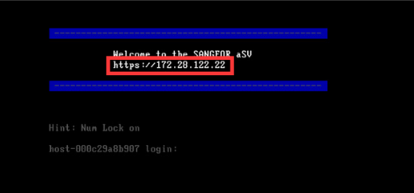
- Sambungkan monitor
Hubungkan server HCI ke monitor melalui port VGA. Keyboard tidak diperlukan karena alamat hanya ditampilkan.
- Catat IP yang tampil
Management IP ditampilkan setelah boot dengan format
https://<IP>. - Simpan di dokumen
Alamat ini tidak ditampilkan lagi pada sesi berikutnya. Catat di dokumen as-built agar tidak perlu dicari ulang.
Catatan lapangan: cara ini memerlukan akses fisik. Alternatifnya, IPMI dapat menampilkan layar yang sama dari jarak jauh jika akun IPMI masih diketahui. Tetap catat alamatnya; jangan mengandalkan ingatan.
Empat interface, empat fungsi
Management, overlay, storage, dan physical edge memiliki jalur masing-masing. Pahami pembagian ini sebelum mengonfigurasi switch fisik.
Empat interface HCI, empat tugas berbeda.
Setiap jenis trafik di HCI memiliki interface sendiri. Menggabungkan fungsi yang tidak tepat, misalnya trafik manajemen dengan replikasi storage, dapat menurunkan performa dan menyulitkan troubleshooting.
Management
eth0 · driver igb- Mengelola operasional cluster: update template, backup dan recovery, serta pemeriksaan status node.
- Satu-satunya jalur web console dari jaringan admin.
- VLAN ID, IP, netmask, dan gateway diisi di sini.
Overlay
VXLAN · UDP- Meneruskan trafik VM antar node melalui jaringan virtual.
- Tidak melewati jaringan fisik; trafik VM tetap di dalam tunnel VXLAN.
- Sebaiknya memakai interface fisik terpisah.
Storage
Real-time · trafik tinggi- Menyinkronkan salinan data antar seluruh node cluster.
- Trafik tinggi sepanjang waktu; agregasi disarankan sejak awal.
- IP parameters diatur lewat Storage Area Network Settings.
Physical Edge
Bridge · tanpa IP- Menghubungkan jaringan virtual ke jaringan fisik.
- Tidak memerlukan IP, tetapi interface fisiknya tetap harus dikonfigurasi.
- Mendukung beberapa koneksi Edge dan VLAN port group untuk VM.
Kenapa penting: di Nodes > Communication Interfaces, HCI menampilkan Management, Overlay, Edge-Connected, Storage, aDesk Communication, dan Flow Control dalam satu daftar. Tampilannya mirip, tetapi fungsi setiap baris berbeda. Kesalahan memilih interface biasanya baru terlihat saat cluster dipakai.
Empat fungsi dalam satu aggregate.
Sejak HCI 6.2.0, empat fungsi (termasuk storage) dapat digabung ke satu aggregate dengan flow control. Ada syarat perangkat keras dan versi yang harus dipenuhi, dan keputusan ini memengaruhi desain VLAN.
Jebakan umum: menghitung jumlah fungsi tanpa memeriksa jenis NIC. Jika NIC bukan Mellanox CX4 atau Intel X710, rencana 4-in-1 harus diturunkan menjadi 3-in-1: management, overlay, dan physical edge digabung, sedangkan storage memakai interface terpisah.
Simulator rencana interface
Keempat fungsi (management, overlay, physical edge, dan storage) berbagi satu aggregate 10G dengan 4 interface fisik.
4 fungsi maksimal dalam satu aggregate
maksimum fungsi = 4 · rencana 4-in-1 · hasil didukung
Interface untuk operasional cluster.
Interface management dipakai untuk operasional cluster: update template, backup dan recovery, serta pemeriksaan status node.
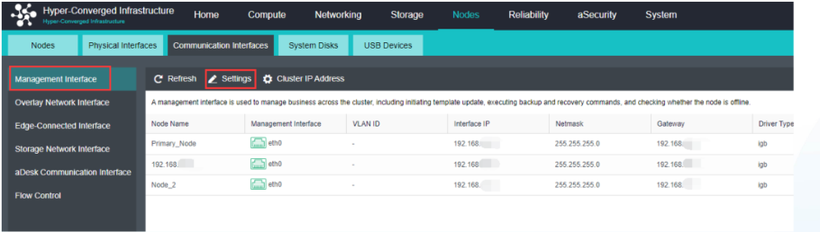
- Buka jalur konfigurasi
Nodes > Communication Interfaces > Management Interface > Settings. Seluruh konfigurasi jaringan operasional cluster ada di halaman ini.
- Isi variabel jaringan
VLAN ID (opsional), Interface IP, Netmask, dan Gateway. Nilai default lab: jaringan 192.168.x.x dengan driver
igb. - Periksa Cluster IP Address
Tombol ⚙ Cluster IP Address berada di bagian atas layar. Cluster memerlukan satu alamat virtual, bukan hanya IP tiap node.
- Ketahui fungsinya
Update template, backup dan recovery, serta pemeriksaan node online berjalan melalui interface ini.
Jebakan umum: tidak menyamakan parameter jaringan antar node. Semua node harus memakai skema IP, netmask, dan gateway yang konsisten. Satu node dengan netmask berbeda tidak dapat berkomunikasi dengan benar untuk replikasi cluster.
Lalu lintas VM antar node yang tidak keluar ke fisik.
Overlay interface (VXLAN) meneruskan trafik antar node di dalam jaringan virtual tanpa melewati switch fisik. VM pada node berbeda dapat berkomunikasi langsung melalui jalur ini.
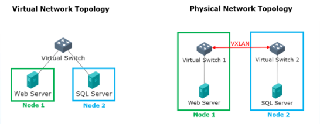
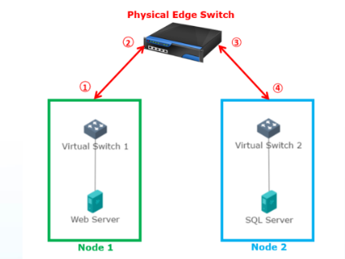
Kapan trafik lewat overlay, kapan lewat Edge
- VM di node yang sama berkomunikasi melalui internal bridge, tanpa keluar dari node.
- VM di node berbeda berkomunikasi melalui overlay saat terhubung ke vSwitch; jalurnya VXLAN dan tidak melewati Physical Edge.
- VM yang terhubung langsung ke Edge berkomunikasi melalui Edge, bukan overlay.
- Tanpa overlay, trafik antar node harus melewati empat lapis fisik sehingga lebih lambat dan membebani Physical Edge.
Kenapa penting: Overlay menggunakan protokol UDP. Encapsulation VXLAN memungkinkan VM antar node berkomunikasi tanpa menduplikasi VLAN fisik. Karena itu, interface terpisah untuk overlay sangat disarankan.
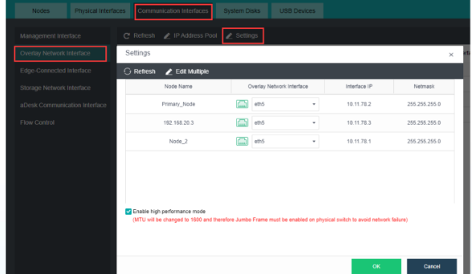
Communication Interfaces > Overlay Network Interface > Settings; tabel menampilkan Interface IP 10.11.78.2 / .3 / .1 dengan netmask 255.255.255.0" loading="lazy" width="588" height="342">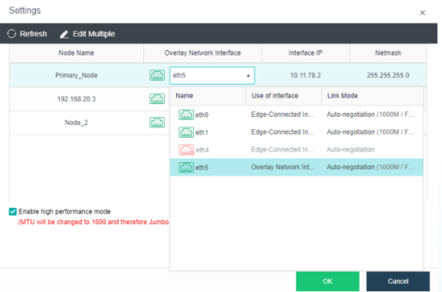
Buka Settings, lalu pilih interface fisik
Konfigurasi overlay berada di menu yang sama dengan management. Pilih Overlay Network Interface pada menu kiri.
- Buka Settings. Jalur konfigurasi: Nodes > Communication Interfaces > Overlay Network Interface > Settings.
- Pilih interface fisik yang terhubung. Dropdown hanya menampilkan interface yang terpasang (eth0, eth1, eth5). Sisakan interface Edge untuk fungsi Edge, lalu pilih interface khusus overlay (contoh:
eth5). - Isi IP overlay per node. Contoh jalur lab:
10.11.78.1 / .2 / .3, netmask255.255.255.0.
Jebakan umum: mengasumsikan semua interface fisik tersedia di dropdown. Interface hanya muncul jika kabelnya terhubung. Pasang kabel terlebih dahulu, lalu buka Settings.
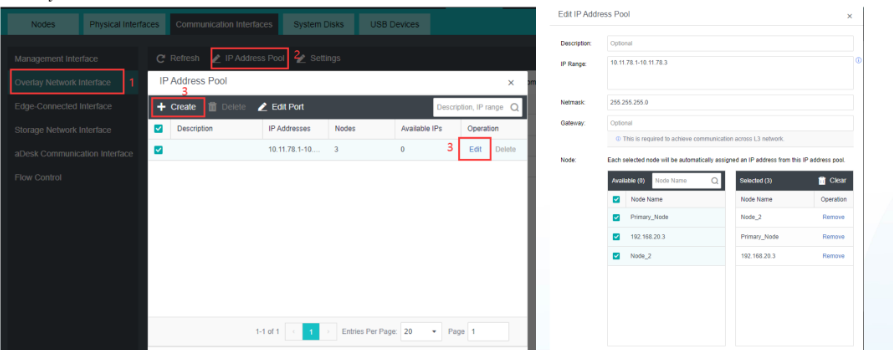
IP Address Pool otomatis
Untuk cluster dengan beberapa node, pengisian IP manual satu per satu tidak efisien. Dengan IP Address Pool, setiap node yang dipilih otomatis mendapat satu IP dari range.
- Buat pool. Klik IP Address Pool > + Create — isi Description (opsional), IP Range, dan Netmask.
- Pilih node anggota pool. Centang node di bagian Available dan pindahkan ke Selected; setiap node memperoleh satu IP dari pool.
- Edit Port bila perlu. Tombol Edit Port mengatur ulang pemilihan port tanpa menghapus pool.
Catatan lapangan: pool pada lab adalah 10.11.78.1 – 10.11.78.3 untuk tiga node. Sesuaikan dengan denah jaringan dan pastikan jumlah IP dalam range mencukupi; jika tidak, ada node yang tidak mendapat IP overlay.
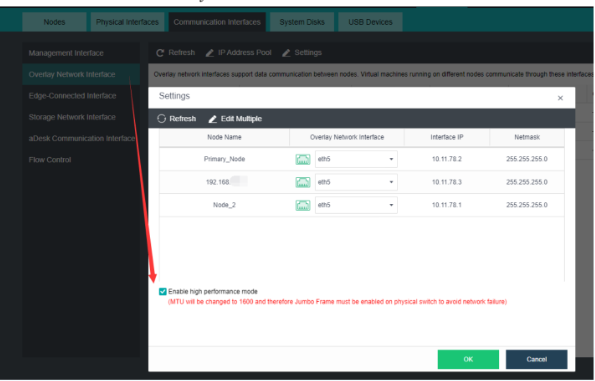
High Performance Mode
Opsi ini paling memengaruhi performa jaringan HCI. Aktifkan hanya jika switch fisik yang terhubung mendukung jumbo frame.
- Centang Enable high performance mode. MTU HCI akan berubah menjadi 1600 — paket VXLAN tidak lagi dipecah.
- Perhatikan peringatan merah. Pesan “MTU will be changed to 1600 and therefore Jumbo Frame must be enabled on physical switch to avoid network failure” berarti switch harus siap sebelum opsi diaktifkan.
- Klik OK. Satu dialog menyelesaikan konfigurasi overlay per node: interface fisik, IP, dan mode performa.
Kenapa penting: Switch dengan MTU default 1500 tidak dapat meneruskan paket 1600. Jika jumbo frame tidak diaktifkan, paket akan difragmentasi tanpa pesan error yang jelas. Konfigurasi switch dibahas pada bagian VXLAN & MTU.
Paket 1600 byte di jalur MTU 1500 = dipecah.
Encapsulation VXLAN menambah header 50 byte, sehingga total paket VXLAN sekitar 1600 byte. Ethernet default hanya memuat 1500 — paket dibagi dua frame dan performa turun. Solusinya: jumbo frame di kedua sisi.
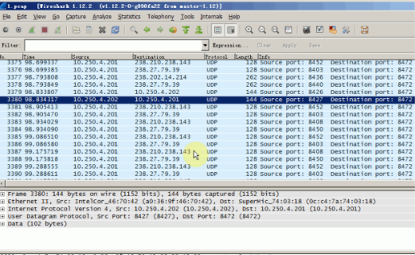
- Encapsulation menambah ukuran. Header VXLAN berukuran 50 byte, sehingga total paket di jaringan fisik sekitar 1600 byte.
- Default MTU 1500 tidak cukup. Paket dipecah menjadi dua frame di jalur fisik (contoh: 1500 + 100 byte).
- Wireshark membuktikannya. Paket UDP dengan port 8472 terlihat di jalur fisik, menunjukkan encapsulation VXLAN berjalan.
Kenapa penting: Fragmentasi tidak menghilangkan data, tetapi menambah beban CPU dan menurunkan throughput. Komunikasi VM tetap berjalan, hanya lebih lambat tanpa peringatan.
Switch fisik dengan jumbo frame
- Gigabit Ethernet mendukung sampai 9000 MTU
- Paket VXLAN 1600 lewat tanpa dipecah
- Throughput HCI meningkat
Cisco:
Switch(config)# system mtu jumbo 9000
Switch(config)# exit
Switch# reload
Switch tanpa jumbo frame
- Paket 1600 dipecah di tiap lompatan
- Fragmentasi makan CPU dan menurunkan throughput
- Tidak ada alarm; kinerja hanya terasa lebih lambat
H3C:
<sysname> system-view
[sysname] interface GigabitEthernet 1/0/1
[sysname] jumboframe enable
Jebakan umum: mengaktifkan High Performance Mode di HCI sebelum switch siap. Urutan yang benar: aktifkan jumbo frame di switch fisik terlebih dahulu (Cisco memerlukan reload), baru centang High Performance Mode di HCI.
Penentu MTU VXLAN
MTU 1500: paket VXLAN sekitar 1600 byte melebihi batas, sehingga setiap paket dipecah menjadi dua frame dan performa menurun. Aktifkan jumbo frame di switch fisik (Cisco: system mtu jumbo 9000; H3C: jumboframe enable).
Interface storage dan physical edge.
Storage menangani replikasi data antar node dengan trafik tinggi sepanjang waktu. Physical Edge menghubungkan jaringan virtual ke jaringan fisik. Aturan konfigurasi keduanya berbeda.
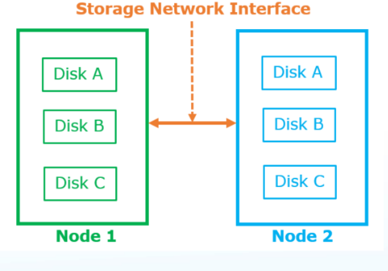
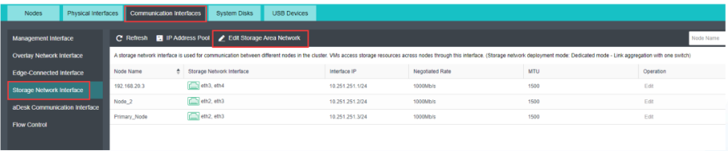
Sinkronisasi data antar node
- Sinkronisasi real-time. Interface storage menyalin data antar seluruh node cluster, sehingga kegagalan satu node tidak memutus akses data.
- Trafik tinggi sepanjang waktu. HCI menyarankan Link Aggregation sejak awal untuk interface ini (banner layar menampilkan mode Dedicated - link aggregation with one switch).
- Dua jalur konfigurasi. Pertama: Nodes > Communication Interfaces > Storage Network Interface. Kedua: Storage > Virtual Storage > Storage Area Network Settings; jalur kedua hanya mengarahkan ke jalur pertama.
Kenapa penting: storage adalah satu-satunya interface yang disarankan diagregasi sejak awal. Kecepatan replikasi menentukan berapa lama proses pemulihan saat node atau disk diganti.
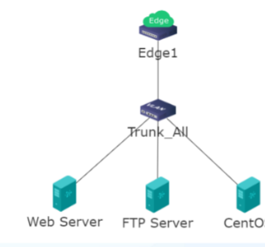
Bridge tanpa IP
- Bridge antar jaringan. Physical Edge Interface menghubungkan jaringan virtual ke jaringan fisik.
- Tidak memerlukan IP. Konfigurasi hanya dilakukan pada interface fisik yang terhubung ke jaringan fisik.
- Dukungan multi-edge dan VLAN port group. Beberapa koneksi Edge dapat ditambahkan, dan setiap VM dapat memilih VLAN port group (contoh: Trunk_All).
Jebakan umum: menganggap “tanpa IP” berarti “tanpa konfigurasi”. Interface Edge tetap harus dipetakan ke interface fisik; jika tidak, VM yang terhubung langsung ke Edge tidak memiliki akses ke jaringan fisik.
VLAN subinterface: mulai HCI 6.0.0, link aggregate interface mendukung VLAN tagging. Jalur konfigurasi: Nodes > Physical Interfaces > Add Multiple VLAN Subinterfaces; pilih interface fisik dan isi VLAN ID. IP, netmask, dan gateway VLAN bersifat opsional. Topik berikutnya membahas agregasi.
Agregasi interface
Gabungkan beberapa interface dengan bonding, pilih mode load balancing yang sesuai switch, dan aktifkan jumbo frame di kedua sisi. Agregasi di sisi HCI saja tidak cukup.
Banyak kabel, satu interface logis.
Agregasi menggabungkan beberapa interface fisik (ethX) menjadi satu bond untuk Management, Overlay, dan Physical Edge. Konfigurasi di HCI cepat; masalah biasanya muncul karena switch tidak disetel dengan mode yang sama.
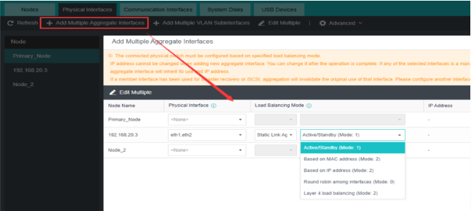
- Buka menu agregasi
Jalur konfigurasi: Nodes > Physical Interfaces > Add Multiple Aggregate Interfaces. Menu ini berada di samping tombol VLAN Subinterfaces.
- Pilih ethX yang digabung
Pilih physical interface (misalnya
eth1daneth2) untuk digabungkan. Tabel node menampilkaneth1,eth2sebagai satu entri. - Pilih Load Balancing Mode
Mode harus sesuai dengan setelan switch fisik: Active/Standby (Mode 1), based on MAC, round robin, atau Layer 4 load balancing.
- Baca peringatan oranye dulu
Interface fisik dikonfigurasi berdasarkan mode LB tertentu, dan semua anggota satu aggregate harus memakai setelan fisik yang sama. Jika salah satu anggota sebelumnya dipakai untuk disaster recovery atau iSCSI, agregasi akan menghentikan penggunaan tersebut; siapkan interface pengganti.
Jebakan umum: memakai interface yang masih memiliki tugas lain. Interface yang sebelumnya dipakai untuk iSCSI atau disaster recovery tidak dapat dijadikan anggota bond. Gunakan interface yang kosong.
Lima pilihan mode — cocok di kedua sisi.
Pilihan Load Balancing Mode di HCI berhubungan langsung dengan bond mode pada sistem. Tabel berikut adalah pemetaan dari materi training dan dapat dipakai sebagai acuan saat menyamakan konfigurasi switch.
| Pilihan di HCI | Bond mode yang dipakai | Catatan |
|---|---|---|
| Active/Standby (Mode 1) | bond-mode active-backup | Satu jalur aktif, sisanya siaga — tidak butuh konfigurasi khusus di switch |
| Based on MAC Address (Mode 2) | balance-xor · hash policy layer 2 | Distribusi berdasar alamat MAC |
| Based on MAC Address | balance-xor · hash policy layer 2+3 | Varian hash lapis 2+3 |
| Round robin among interfaces (Mode 0) | balance-rr | Paket dibagi bergantian antar interface |
| Layer 4 load balancing (Mode 2) | balance-xor · hash policy layer 3+4 | Distribusi berdasar lapisan 3+4 |
Kenapa penting: Mode yang berbeda di kedua sisi tidak selalu membuat bond gagal total, tetapi distribusi trafik menjadi tidak sesuai. Trafik dapat menumpuk di satu anggota, kapasitas gabungan tidak tercapai, dan tidak ada alarm yang menunjuk ke mode bond.
Pilihan paling sederhana: Active/Standby (Mode 1) tidak memerlukan konfigurasi khusus di switch fisik. Untuk lab dan cluster kecil, mode ini aman sebagai titik awal. Mode distribusi lain ditambahkan setelah disepakati dengan pengelola switch.
Berbagi satu kabel tanpa berebut bandwidth.
Saat beberapa fungsi memakai interface yang sama (multiplexing), flow control membatasi laju puncak tiap fungsi: management, VXLAN, physical edge, dan storage memiliki kuota masing-masing.
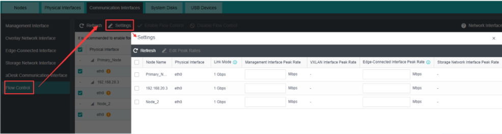
- Buka Flow Control
Nodes > Communication Interfaces > Flow Control > Settings — menu terbawah di daftar Communication Interfaces.
- Enable flow control bila digabung
Banner pada layar menyarankan flow control ketika beberapa fungsi memakai port yang sama.
- Isi peak rate per fungsi
Edit laju puncak untuk Management, VXLAN, Physical Edge, dan Storage secara terpisah per interface — sesuaikan dengan proporsi trafik di lapangan.
- Kunci Link Mode
Kolom Link Mode menunjukkan kecepatan per interface (misal 1 Gbps) — kuota peak yang diisi tidak boleh melebihi kemampuan kabelnya.
Kenapa penting: Tanpa flow control, trafik replikasi storage dapat menghabiskan bandwidth yang dibutuhkan management ketika port dipakai bersama. Peak rate memberi setiap fungsi jatah bandwidth yang jelas.
Fitur agregasi tergantung versi firmware.
Fitur agregasi ditambahkan bertahap pada setiap versi firmware. Tabel berikut menunjukkan fitur yang tersedia pada build tertentu; periksa versi firmware sebelum merancang topologi.
| Mulai versi | Fitur | Konsekuensi praktis |
|---|---|---|
| HCI 6.0.0 | Active/standby LB tanpa konfigurasi switch | Jalur dengan dua switch berbeda tidak lagi wajib memakai stack switch — versi lama mewajibkannya |
| HCI 6.0.0 | 8 interface dalam satu port channel | Batas atas jumlah anggota bond |
| HCI 6.0.0 | Flow control untuk multiplexing kegunaan port | Kuota peak rate per fungsi |
| HCI 6.8.0 | Static LACP didukung | Switch tetap harus dikonfigurasi port-channel yang sesuai |
| HCI 6.2.0 | 4 fungsi multiplexing (termasuk storage) dengan flow control | Empat interface digabung ke satu aggregate + kuota peak rate |
Jebakan umum: merencanakan multiplexing 4-in-1 pada versi di bawah 6.2.0. Fitur 4-in-1 memerlukan firmware 6.2.0 atau lebih baru; versi lama hanya mendukung tiga fungsi, dengan storage pada interface terpisah. Periksa versi firmware sebelum menghitung kebutuhan interface.
Kenapa penting: Dukungan static LACP pada 6.8.0 bukan berarti LACP dinamis didukung. Materi training menyatakan hanya algoritma agregasi statik yang didukung, bukan mode dinamis. Jika switch dikonfigurasi dinamis, anggota bond tidak akan berjalan penuh.
Konfigurasi switch setelah agregasi HCI.
Setelah agregasi dibuat di HCI, switch fisik harus dikonfigurasi: wajib untuk Management, Edge, dan Overlay, opsional untuk storage. Algoritma load balancing harus sama dengan konfigurasi HCI.
Cisco — contoh
-
channel-group 1 mode on -
port-channel load-balance src-dst-ip -
port-channel load-balance src-dst-mac
H3C — contoh
-
link-aggregation load-sharing mode source-ip destination-ip -
link-aggregation load-sharing mode source-mac destination-mac
Dua aturan utama: algoritma load balancing harus sama dengan setelan aggregate di HCI, dan hanya agregasi statik yang didukung, bukan algoritma dinamis seperti LACP dinamis. Pelanggaran aturan ini adalah penyebab paling umum bond yang berjalan tetapi hanya memakai satu jalur.
Catatan lapangan: Setelah agregasi selesai, konfigurasi berlanjut di sisi switch. Simpan tangkapan layar setelan HCI (mode LB dan daftar anggota) sebelum menutup sesi; tim jaringan memerlukan nilai yang sama untuk port-channel.
Lisensi dan aktivasi
Edisi lisensi menentukan batas cluster, trial 60 hari menentukan tenggat, dan USB Key menentukan apakah VM baru dapat dinyalakan. Hitung kebutuhan lisensi sejak awal.
Edisi menentukan ukuran cluster.
Sebelum memasang USB Key, pahami parameter yang dibatasi lisensi: jumlah node, core per VM, memori per VM, dan jumlah virtual switch. Standard Edition terpasang secara default; Enterprise Edition harus dibeli.
| Aspek | Standard Edition | Enterprise Edition |
|---|---|---|
| Jumlah node | 3 | Tergantung jumlah soket CPU |
| Cara mendapat | By default | Dibeli dari Sangfor |
| Jumlah VM berjalan | Tanpa batas | Tanpa batas |
| Max core per VM | 4 | Tanpa batas |
| Memori per VM | 8 GB | Tak melebihi memori satu node fisik |
| Virtual switch | 2 | Tanpa batas |
| Virtual router | 1 | Tanpa batas |
Jebakan umum: menjalankan VM berukuran besar pada Standard Edition. VM yang membutuhkan lebih dari 4 core atau 8 GB memori tidak dapat berjalan pada batas Standard. Hitung kebutuhan aplikasi sebelum memilih edisi.
Enam modul tambahan di atas lisensi dasar.
Selain edisi dasar, HCI memiliki lisensi fitur lanjutan. Tidak semua relevan untuk setiap deployment; pahami fungsinya agar tidak mengaktifkan modul yang tidak digunakan.
CDP
Continuous Data Protection- Lisensi agar VM memiliki fungsi backup CDP.
- Backup berjalan terus-menerus tanpa jadwal.
aHM
Heterogeneous Virtualization Mgt- Menyelaraskan vCenter ke dalam HCI untuk platform heterogen.
- Termasuk kuota backup vCenter VM.
aSC
Stretched Cluster- Lisensi untuk stretched cluster.
- Berpasangan dengan stretched virtual datastore.
aSI
Security Integration- Integrasi keamanan produk Sangfor ke HCI.
- Juga dipakai KubeManager untuk menyimpan container melalui aSAN.
- Integrasi Cyber Command / Endpoint Secure masih dalam pengembangan.
aGPU
Graphics Card Management- Lisensi untuk kartu grafis yang terpasang di cluster.
- Wajib sebelum GPU dipakai untuk VM.
aSEC
aSEC deployment- Lisensi untuk deployment aSEC.
- Termasuk lisensi EDR.
Kenapa penting: Mengaktifkan modul yang tidak digunakan memboroskan lisensi dan menambah komponen yang harus dipantau. Aktifkan modul hanya ketika fiturnya memang akan dipakai.
USB Key menyimpan lisensi cluster.
Lisensi HCI memerlukan USB Key. Instalasi baru atau reset factory default mendapat trial 60 hari. Setelah USB Key dicabut, lisensi berlaku 30 hari lagi.
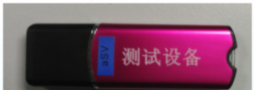
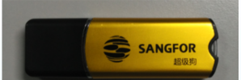
Warna USB Key punya arti
- Instalasi baru atau reset factory default mendapat trial 60 hari, cukup untuk lab dan pembuktian konsep.
- USB Key dicabut → lisensi berlaku 30 hari lagi; VM baru tidak dapat dinyalakan, tetapi VM yang sedang berjalan tidak terpengaruh.
- Red USB Key untuk customer POC; Gold USB Key untuk customer yang membeli. Pastikan warna key sesuai sebelum deployment, karena key yang salah berarti masa trial yang akan berakhir.
Jebakan umum: mencabut USB Key untuk sementara agar dapat dipakai di cluster lain. Hitungan 30 hari tetap berjalan; VM baru tidak dapat dinyalakan sampai key dikembalikan atau lisensi diperbaiki.
Dua hal yang harus benar: waktu dan kunci.
Kegagalan aktivasi lebih sering disebabkan jam cluster yang tidak benar daripada USB Key. Sinkronkan waktu melalui NTP terlebih dahulu, lalu daftarkan kunci.
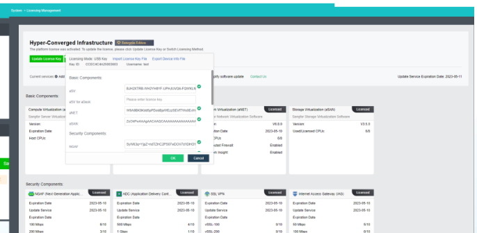
- Sinkronkan waktu dengan NTP
System > Date and Language > Time Sync — centang Sync Time with NTP Server dan atur NTP (contoh:
pool.ntp.org). Waktu yang tidak sinkron adalah penyebab error lisensi yang paling murah untuk diperbaiki. - Sisipkan USB Key
Pasang USB Key ke node. Lisensi komponen dasar (aSV, aNET/aSAN) dan komponen keamanan muncul beserta masa berlaku dan bandwidth quota.
- Isi License Keys
System > Licensing Management, mode USB Key untuk lisensi fisik. Isi kunci atau gunakan Import License Key File.
- Simpan bukti device info
Tombol Export Device Info File menghasilkan berkas informasi perangkat yang dikirim untuk membuat file .lic.
Kenapa penting: Tanggal pada halaman lisensi (contoh lab: 2026-11-10) dihitung dari jam cluster. Selisih beberapa menit dapat membuat masa berlaku dianggap belum mulai atau sudah berakhir.
Angka lisensi yang wajib dihafal.
Lisensi berlaku 30 hari setelah USB Key dicabut, hitungan direset setelah terpasang 60 hari berturut-turut, dan satu USB Key maksimal dipakai di 3 cluster berbeda. Simulasikan hitungannya di bawah.
USB Key dicabut
Validitas berkurang: USB Key dicabut selama 10 hari.
USB Key kembali 50 hari
Terpasang kembali selama 50 hari; belum mencapai ambang reset 60 hari.
USB Key dicabut lagi
Sisa lisensi 20 hari: 30 − 10 = 20.
Geser jumlah hari USB dicabut
USB Key terpasang: lisensi valid 30 hari dan direset setiap kali terpasang 60 hari berturut-turut.
30 (total validitas) − 0 (hari dicabut) = 30 (hari tersisa)
| Aturan USB Key | Nilai | Arti praktis |
|---|---|---|
| Validitas setelah dicabut/rusak | 30 hari | VM baru tidak bisa dinyalakan setelah tamat; VM berjalan tetap aman |
| Reset validitas | 60 hari terpasang beruntun | Salah satu cara memulihkan hitungan — tanpa mengganti key |
| Batas pindah cluster | 3 kali | Cluster keempat tidak mengaktifkan otorisasi dengan key yang sama |
| Update di cluster sama | Tanpa batas | Update otorisasi key di cluster yang sama tak terbatas |
| USB rusak | Kirim ke Sangfor HQ | Penggantian key baru — jangan buang atau rusak sendiri |
Jebakan umum: memindahkan USB Key antar cluster percobaan. Batasnya tiga cluster; key yang sama tidak mengaktifkan otorisasi di cluster keempat. Perlakukan USB Key sebagai aset yang harus dicatat penggunaannya.
Lisensi tanpa USB fisik.
Sejak HCI 6.1.0, lisensi dapat memakai virtual key sehingga USB fisik menjadi opsional. Lisensi terikat pada informasi perangkat (device info), bukan pada ID USB Key.
Mulai HCI 6.1.0. Virtual key didukung untuk lisensi; Physical USB Key menjadi opsional di platform.
Basis lisensi adalah device info. Lisensi dihitung dari informasi perangkat, bukan ID USB Key. File device info diekspor dari platform melalui Export Device Info File.
Fingerprint node. Lisensi virtual key terikat pada fingerprint node dan ditandai simbol kunci. Jika perangkat keras diganti, file lisensi harus diajukan ulang (re-apply) untuk cluster.
Lisensi mengikuti node. Lisensi diasosiasikan dengan node di cluster; bila node dicabut dari cluster, node itu harus diotorisasi ulang.
| Ketentuan virtual key | Isi aturan |
|---|---|
| Struktur baru sejak HCI 6.8.0 | Struktur lisensi virtual key berubah dari versi 6.8.0 — alur lama tidak berlaku |
| Minimal 2 node | Saat ekspor ke Sangfor untuk membuat file .lic, minimal informasi device 2 node yang dibutuhkan |
| Node masuk cluster dulu | Deployment baru HCI 6.8.0: node wajib ditambahkan ke cluster lebih dulu sebelum lisensi |
| Cluster upgrade | Cluster dari versi lama wajib melalui proses relisensi (relicensing) cluster |
Catatan lapangan: Virtual key menghilangkan ketergantungan pada USB fisik yang dapat hilang, tetapi menambah ketergantungan pada fingerprint perangkat. Perubahan perangkat keras memerlukan pengajuan lisensi ulang. Saat upgrade hardware direncanakan, siapkan file .lic baru sebagai bagian dari change.
Kenapa penting: Jika lisensi bergantung pada satu USB fisik, kerusakan USB berarti lisensi hanya berlaku 30 hari. Virtual key mengatasi ini dengan mengikat lisensi ke device info, tetapi menambahkan ketentuan minimal 2 node dan urutan join cluster sebelum lisensi pada HCI 6.8.0.
Dari konfigurasi ke topologi
Seluruh komponen sudah dikonfigurasi. Bagian terakhir menyusun topologi fisik 2 dan 3 node, lalu memverifikasi semuanya dengan checklist.
2 atau 3 node — dan jumlah switch-nya berbeda.
Topologi fisik mengikuti konfigurasi pada modul ini: switch management, switch edge, dan untuk 3 node ditambah switch khusus storage dan overlay.
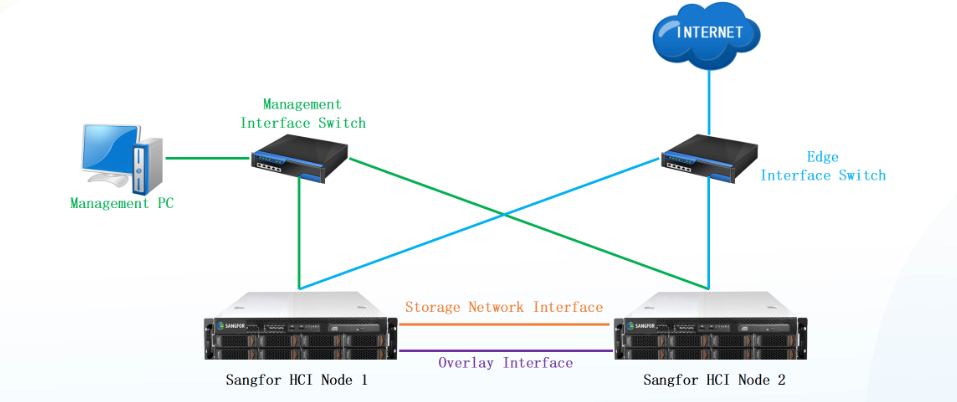
Koneksi langsung antar node
- Management PC → Management Interface Switch. Jalur akses web console; semua perangkat terhubung ke switch yang sama dengan ETH0.
- Edge Interface Switch → Internet. Jalur lalu lintas bisnis VM lewat Physical Edge.
- Storage & overlay kabel langsung. Menghubungkan kedua node tanpa switch: dua link direct untuk Storage Network Interface dan Overlay Interface.
Kenapa penting: Pada dua node, switch khusus storage dan overlay tidak diperlukan sehingga keduanya memakai kabel langsung. Konsekuensinya, satu kabel yang gagal memutus satu fungsi; agregasi (Topik 3) menjadi satu-satunya mekanisme redundansi.
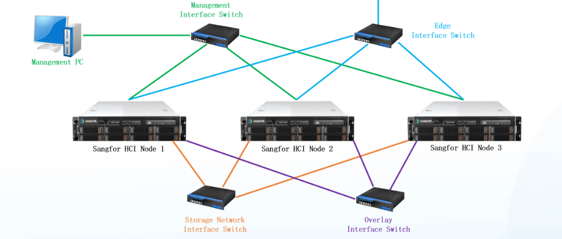
Tiga node, dua switch tambahan
- Switch storage dan switch overlay terpisah. Ketiga node saling terhubung lewat mereka — tidak lagi link direct.
- Management dan edge tetap dua switch. Polanya sama dengan 2 node; tambahannya di sisi belakang.
- Siap untuk produksi. Tiga node adalah ukuran minimum cluster produksi; quorum tetap aman saat satu node dimatikan untuk pemeliharaan.
| Aspek | 2 node | 3 node |
|---|---|---|
| Switch storage/overlay | Tidak — kabel langsung antar node | Ada — dua switch khusus terpisah |
| Switch management & edge | 2 | 2 (sama) |
| Quorum | Tidak aman untuk pemeliharaan | Aman — 2 dari 3 |
| Tujuan | Lab / pilot kecil | Minimum produksi |
Catatan lapangan: Diagram di atas adalah acuan fisik sebelum cluster dibentuk. Sebelum node dinyalakan: pasang kabel sesuai diagram, konfigurasi interface (Topik 2), aktifkan agregasi di kedua sisi (Topik 3), dan pasang lisensi (Topik 4). Setelah semuanya terpenuhi, cluster minimum siap dibangun.
Sepuluh titik sebelum cluster dibukakan.
Checklist ini merangkum Topik 1–5 menjadi sepuluh pemeriksaan dengan bukti. Progres tersimpan di browser ini; centang saat memverifikasi cluster.
Checklist verifikasi konfigurasi dasar
Centang yang sudah kamu periksa langsung di platform. Progres disimpan di browser ini.
Catatan lapangan: Simpan bukti, bukan ingatan. Tangkapan layar halaman lisensi, setelan overlay, dan port-channel switch disimpan di dokumen as-built bersama nama kabel. Saat node bermasalah beberapa bulan kemudian, dokumen inilah yang mempercepat diagnosis.
Jebakan umum: menandai item yang belum benar-benar diperiksa. Satu pemeriksaan yang gagal berarti cluster belum layak dijalankan; perbaiki dulu, jangan ditunda.
Gejala, sebab, dan tindakan pertama.
Kegagalan konfigurasi dasar punya pola yang sama: interface, mode bond, MTU, atau lisensi. Gunakan tabel ini sebelum mencoba reinstall apa pun.
| Gejala | Penyebab paling sering | Cek pertama | Tindakan |
|---|---|---|---|
| Interface fisik tidak muncul di dropdown | Kabel belum tercolok / port down | LED port switch | Pasang kabel, refresh halaman |
| VM antar node lambat | Overlay belum dibuat — trafik lewat Edge | Tab Overlay Network Interface | Perbarui IP pool, aktifkan overlay |
| Performa VXLAN turun tidak jelas | Paket 1600 dipecah — jumbo frame mati | MTU di switch fisik | Nyalakan jumbo frame (9000), cek HPM |
| Bond “jalan tapi satu jalur mati” | Mode LB berbeda / LACP dinamis | Mode HCI vs port-channel switch | Samakan mode, gunakan agregasi statik |
| Anggota bond tidak muncul | Interface dulu dipakai iSCSI / DR | Riwayat penggunaan ethX | Pilih interface kosong |
| Lisensi error masa berlaku | Jam cluster tidak sinkron | Time Sync NTP | Sinkron jam, cek ulang halaman lisensi |
| VM baru tidak bisa menyala | USB Key habis 30 hari | Halaman Licensing Management | Kembalikan key / ajukan penggantian |
| Key tak aktif di cluster baru | Sudah lewat batas 3 cluster | Sejarah pemakaian key | Minta key pengganti dari Sangfor |
| VLAN subinterface gagal dibuat | Versi < 6.0.0 | Versi firmware node | Upgrade atau konfigurasi switch |
Urutan diagnosis: interface fisik, konfigurasi HCI, switch fisik, lalu lisensi. Node yang tidak muncul sering kali hanya karena kabel longgar.
Lima kesalahan yang paling mahal.
Semua jebakan berikut terjadi karena satu langkah dianggap sepele, lalu menimbulkan masalah saat cluster berjalan.
Jumbo frame diabaikan
HPM nyala, switch tetap MTU 1500. Paket VXLAN terpecah senyap — performa turun tanpa satu pun alarm.
Mode bond tidak sinkron
Distribusi trafik menumpuk di satu kabel, kecepatan agregasi tidak tercapai, dan tidak ada pesan error yang jelas.
USB Key diputar cluster
Key yang dipinjamkan ke cluster keempat tidak mengaktifkan otorisasi; batasnya tiga cluster.
Versi diabaikan
Rencana 4-in-1 dan VLAN subinterface dipaksakan ke versi tua — konfigurasi gagal senyap. Cek versi firmware dulu.
Password admin dibiarkan
admin/admin adalah kredensial default yang diketahui umum. Ganti password pada login pertama, sebelum interface terhubung ke jaringan produksi.
Pola yang sama: Semua jebakan di atas terjadi karena satu langkah dianggap detail kecil. Jika ragu, berhenti dan verifikasi; dua menit pemeriksaan lebih murah daripada satu malam diagnosis.
Lima poin utama modul.
Lima poin berikut merangkum seluruh modul, dimulai dari prinsip paling dasar: setiap jenis trafik memiliki jalur sendiri.
Empat interface, empat tugas. Management, overlay, storage, physical edge — memisahkan tugasnya membuat masalah jaringan mudah dilacak.
VXLAN menambah ukuran, bukan mengubah jalur. Paket 1600 butuh jumbo frame di switch fisik — kalau tidak, fragmentasi senyap.
Agregasi berarti dua sisi. Mode LB, jumbo frame, dan port-channel harus sama di HCI dan switch — salah satu yang berbeda berarti agregasi tidak penuh.
Lisensi punya tiga angka. 30 hari tamat, 60 hari reset, 3 cluster maksimal — dua pertama menyelamatkan; yang terakhir dijaga.
Topologi menentukan jumlah switch. 2 node memakai kabel langsung; 3 node menambah switch storage dan overlay, dan merupakan ukuran minimum untuk produksi.
Kenapa penting: Konfigurasi dasar HCI tidak dapat dikerjakan setengah. Interface dapat tersambung dengan MTU yang salah, agregasi aktif dengan mode berbeda, atau lisensi terbaca meskipun USB telah dicabut. Setiap topik pada modul ini memiliki jebakan sejenis.
Satu halaman untuk dibawa ke lapangan.
Semua nilai di bawah ini adalah contoh dari modul — ganti dengan denah dan lisensi yang kamu pakai.
Urutan singkat
Console web 10.250.0.7 · admin/admin · ganti password
Nodes › Communication Interfaces › Management › Settings
Pilih eth fisik › IP pool › HPM kalau switch siap
Switch fisik 9000 MTU · Cisco reload · H3C jumboframe
Add Multiple Aggregate Interfaces › mode LB › sinkron switch
NTP dulu › USB Key › Licensing Management
2 node kabel langsung · 3 node + 2 switch › checklist 10
Simpan halaman ini di samping server atau di dokumen as-built, bukan di chat yang mudah tenggelam.
Istilah yang muncul di modul ini.
Ketik untuk memfilter. Definisi dibuat pendek agar cepat dipakai saat membaca slide atau mengikuti percakapan tim jaringan.
Interface manajemen perangkat keras, di luar sistem operasi. Pintu service saat web console tidak bisa dibuka.
Virtual Extensible LAN. Teknik encapsulation berbasis UDP untuk memindahkan trafik VM antar node di dalam jaringan virtual.
Nama interface HCI untuk jalur VXLAN antar node — dianjurkan interface terpisah.
Maximum Transmission Unit. Batas ukuran frame; default Ethernet 1500, paket VXLAN 1600.
Frame Ethernet lebih besar dari default — gigabit mendukung hingga 9000 MTU. Wajib nyala di switch saat HPM aktif.
Mode overlay HCI yang mengubah MTU ke 1600 agar paket VXLAN lewat tanpa dipecah.
Menumpuk beberapa fungsi interface (management, overlay, edge, storage) ke satu aggregate — maksimal 4 sejak HCI 6.2.0.
Gabungan beberapa interface fisik menjadi satu interface logis. Mode LB harus cocok dengan switch.
Bond mode Active/Standby (Mode 1): satu jalur aktif, sisanya siaga. Tidak butuh konfigurasi switch.
Bond mode distribusi berdasar hash (layer 2, 2+3, atau 3+4) — keputusan jalur per-flow.
Protokol agregasi versi statik, didukung sejak HCI 6.8.0 — versi dinamis tidak didukung.
Nama agregasi di switch Cisco; H3C menyebutnya link-aggregation load-sharing.
Pembatas laju puncak per fungsi ketika satu port dipakai beberapa kegunaan sekaligus.
Subinterface logis di atas interface fisik/aggregate, didukung VLAN tagging sejak HCI 6.0.0.
Interface bridge dari jaringan virtual ke jaringan fisik — tanpa IP, mendukung VLAN port group.
Contoh port group VLAN di Edge yang meneruskan lalu lintas beberapa VM sekaligus.
Lisensi default HCI: 3 node, 4 core per VM, memori 8 GB per VM, 2 virtual switch.
Lisensi pembelian: ukuran cluster mengikuti soket CPU; batasan VM dan switch dilepas.
Perangkat fisik pembawa lisensi HCI. Merah untuk POC, emas untuk pembelian.
Berkas lisensi yang dibuat Sangfor dari device info yang diekspor — dasar lisensi virtual key.
Lisensi yang menempel ke device info, bukan USB fisik — didukung sejak HCI 6.1.0, struktur baru sejak 6.8.0.
Tidak ada istilah yang cocok. Coba kata kunci lain.
Uji pemahaman: 5 pertanyaan.
Jawab dulu sebelum membuka pembahasan. Kalau ada yang salah, kembali ke bagian terkait sebelum sesi konfigurasi.
High Performance Mode mengubah MTU HCI menjadi berapa dan mengapa?
Mode bond apa yang tidak butuh konfigurasi khusus di switch fisik?
USB Key dicabut dari cluster. Apa yang terjadi?
Satu USB Key dipindahkan ke cluster keempat. Apa hasilnya?
Untuk virtual key di HCI 6.8.0, berapa minimal node yang device info-nya perlu diekspor untuk membuat .lic?
Skor kamu tampil di halaman ini. Ulangi kuis kalau ingin menguji ulang.
Pertanyaan yang biasanya muncul di lapangan.
Apa yang terjadi kalau High Performance Mode diaktifkan tapi jumbo frame lupa dinyalakan?
system mtu jumbo 9000 + reload · H3C: jumboframe enable) sebelum mencentang HPM.Bond berjalan tetapi kecepatannya hanya seperti satu kabel. Di mana kesalahannya?
Apakah interface storage wajib diagregasi?
Kenapa IP overlay diberi lewat pool, bukan manual?
Bolehkah USB Key dipakai untuk cluster POC dan cluster produksi?
Node dengan lisensi virtual key diganti perangkat kerasnya: apa yang perlu disiapkan?
Kapan 2 node cukup dan kapan harus 3?
Kenapa jam cluster memengaruhi lisensi?
pool.ntp.org), cek ulang halaman lisensi.Checklist kesiapan sebelum sesi konfigurasi
Centang yang sudah kamu kuasai. Progres disimpan di browser ini.
Dasar terpasang. Cluster menunggu.
Login, interface, agregasi, lisensi, dan topologi sudah dipelajari. Modul berikutnya — Operasional & Manajemen Cluster HCI — melanjutkan dari pembentukan cluster, pool storage, template VM, hingga monitoring harian.